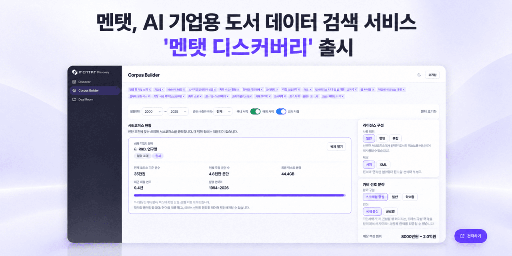

Executive Summary
이 글은 책 한 권에 값을 매기는 단위가 바뀌는 자리를 본다. 도서 라이선싱 기업 멘탯이 2026년 10월 13일 '멘탯 디스커버리'를 열었다. 국내 출판사 90여 곳과 계약한 책 약 3만4,000종을 AI 기업이 카테고리로 찾아보고, 그 분량을 토큰 수와 예상 비용으로 확인한 뒤 계약까지 갈 수 있는 창구다. 그전까지 AI 기업은 출판사를 한 곳씩 찾아다니며 협상을 처음부터 다시 시작해야 했다.
장터에 오른 분량은 약 80억 토큰이다. 같은 목록을 출판업계는 '권'으로 세고 AI 업계는 '토큰'으로 세는데, 멘탯은 그 환산을 플랫폼이 먼저 해 놓고 문을 열었다. 다만 토큰 수가 재는 것은 분량뿐이다. 전문성이나 인용 가치는 토큰 수에 나타나지 않고, 그래서 멘탯도 값을 토큰 수에 그대로 비례시키지 않았다.
여기까지는 멘탯의 발표와 국내 보도에 실린 사실이다. 4절에서 해외 사례를 나란히 놓고 토큰이 '거래를 시작하는 단위'일 뿐이라고 읽는 대목, 그리고 5절은 이 글의 해석이다.
주요 수치
네 칸을 뽑았다. 앞의 둘은 장터에 오른 같은 물량을 두 업계가 각자의 단위로 부른 수다. 셋째는 멘탯이 지금까지 맺은 계약을 합한 금액이고, 넷째는 거래가 아니라 미국 법정에서 매겨진 책값이다.
출처: 멘탯 발표문과 AI타임스·지디넷코리아·벤처스퀘어 보도(2026년 10월 13일), 앤트로픽 합의 관련 해외 보도.
약 80억 토큰
AI 업계의 단위로 본 물량
멘탯 디스커버리에 올라 검색되는 전체 분량이다. AI 기업이 쓰는 단위여서 규모와 예상 비용을 화면에서 바로 가늠할 수 있다
약 3만4,000종
출판업계의 단위로 본 같은 물량
국내 출판사 90여 곳과 맺은 계약분이다. 두 칸은 다른 물건이 아니라 같은 목록이고, 세는 단위만 업계마다 다르다
약 100억 원
멘탯이 밝힌 누적 계약 규모
2026년 8월 공개 기준이다. 학술 전문 출판사와 잡지사를 포함한 국내 발행사 50여 곳이 참여했고, 글로벌 빅테크와 맺은 라이선싱 계약도 들어 있다
권당 약 3,000달러
미국 법원을 거친 가격 신호
앤트로픽 저자 집단소송 합의금 약 15억 달러를 저작물 약 50만 건으로 나눈 값으로 보도됐다. 토큰이 아니라 작품 단위로 매겨진 값이다
멘탯 디스커버리가 연 창구
멘탯 디스커버리에서 AI 기업이 하는 일은 세 단계다. 먼저 분야와 카테고리로 라이선스된 책을 찾는다. 그다음 그 묶음이 몇 토큰인지, 비용이 대략 얼마인지를 화면에서 확인한다. 마지막으로 쓰임새를 골라 계약으로 넘어간다. 쓰임새는 둘로 나뉜다. 모델을 학습시킬 데이터셋 파일로 받는 길과, AI가 답변할 때 책의 내용을 참조하고 출처를 보여주는 인용 API로 받는 길이다.

세 번째 단계는 화면에서 바로 도장을 찍는 구조가 아니다. 규모와 비용을 확인한 쪽이 상세 카탈로그를 요청하면 거기서부터 계약 협의로 이어진다. 책을 묶어 둔 분류도 출판사별이나 출간 연도별이 아니라 내용을 기준으로 되어 있어서, 찾는 쪽은 필요한 분야부터 좁혀 들어가게 된다.
이 세 단계가 한 화면에 모인 것이 달라진 점이다. 그전까지 AI 기업은 쓸 만한 책을 가진 출판사를 수소문하고, 권리 관계를 확인하고, 분량과 값을 협의하는 일을 출판사마다 반복했다. 어느 출판사에 어떤 분야의 책이 몇 종 있는지를 모아 놓은 목록 자체가 없었기 때문이다. 멘탯은 그 목록을 만들고 거기에 토큰 수와 예상 비용을 적어 두었다.
"AI 기업이 정식 라이선스가 확보된 책을 쉽게 찾고 바로 활용할 수 있게 하는 데 초점을 맞췄다."
전병욱 멘탯 대표, 2026년 10월 13일 출시 발표
멘탯은 2025년 7월 설립된 회사다. 전병욱 대표는 창비 디지털사업팀장과 카카오엔터테인먼트 신사업을 거쳤고, 국내 출판사가 글로벌 AI 기업을 개별로 상대해서는 협상력을 갖기 어렵다는 문제의식에서 창업했다고 밝혀 왔다. 앤틀러 코리아의 프리시드 투자를 받았고 중소벤처기업부 팁스에 선정됐다. 2026년 8월에는 글로벌 빅테크와 AI 라이선싱 계약을 맺었다고 공개했는데, 그 시점에 밝힌 누적 계약 규모가 약 100억 원이고 참여 발행사는 50여 곳이었다. 두 달 뒤인 이번 출시 시점에 밝힌 계약 출판사는 90여 곳이다.

개별 출판사가 이 장터에 거는 규모도 작지 않다. IT 전문 출판사 제이펍은 IT 전문서와 컴퓨터 활용서 100여 종을 학습·인용 데이터로 공급하고 사용량에 따라 정산받기로 했다. 한 분야의 전문서를 통째로 한 묶음으로 올린 사례다.
멘탯이 출시와 함께 내건 목표는 거래를 성사시키는 데서 끝나지 않는다. 전병욱 대표는 책이 AI에 더 많이 쓰이고 그에 따른 수익이 출판사와 저자에게 돌아가는 구조를 넓혀 가겠다고 밝혔다. 장터를 여는 일과 그 장터에서 번 돈이 원래 책을 만든 쪽으로 흘러가게 하는 일은 같은 말이 아니고, 뒤의 것은 값을 어떻게 매기느냐에 달려 있다.
한쪽은 '권'으로 세고 한쪽은 '토큰'으로 센다
출판업계가 물건을 세는 단위는 권과 쇄와 부수다. 계약서에 적히는 숫자는 인세율이고, 책 한 권이 몇 쇄까지 갔는지가 그 책의 성과다. AI 업계는 같은 글을 토큰으로 센다. 모델이 한 번에 읽을 수 있는 길이도 토큰이고, 학습에 들어간 데이터의 크기도 토큰이며, 쓸 때 내는 돈도 토큰당 얼마로 계산된다.
같은 책을 두고 한쪽은 "이 책 3,000부 찍었다"라고 말하고 다른 쪽은 "이 데이터 몇 토큰이냐"라고 묻는다. 그래서 협상 테이블에서 가장 먼저 하는 일이 환산이었다. 이 책이 몇 자인지 세고, 그게 몇 토큰이 되는지 따지고, 그 분량이면 얼마가 적당한지를 양쪽이 각자의 감각으로 어림잡는 과정이 출판사를 바꿀 때마다 되풀이됐다. 멘탯이 디스커버리를 내놓으며 쓴 설명이 바로 이 지점을 가리킨다.
"멘탯 디스커버리는 출판사의 도서를 AI 기업에 익숙한 토큰과 비용 기준으로 보여줘 양측이 같은 기준에서 데이터를 검토할 수 있도록 만든 서비스."
멘탯 발표문, 2026년 10월 13일
플랫폼이 환산을 미리 해 둔다는 것은 양쪽이 쓰던 단위 중 한쪽을 공용어로 정했다는 뜻이기도 하다. 그 공용어가 토큰이다. 아래 도식은 같은 목록이 두 단위로 적히는 구조를 정리한 것이다.
토큰 수는 책의 무엇을 재는 숫자인가
토큰 수는 분량의 환산값이다. 글자를 모델이 처리하는 조각으로 쪼갠 개수이고, 그래서 두꺼운 책은 토큰이 많고 얇은 책은 적다. 그 이상은 재지 않는다. 30년 묵은 전문 지식이 들어간 책과 하루 만에 쓴 같은 두께의 책은 토큰 수에서 구별되지 않고, 다른 데서 구할 수 없는 내용인지도 토큰 수에 나타나지 않는다. 토큰은 책의 두께를 재는 잣대이지 값어치를 재는 잣대가 아니다.
멘탯도 값을 토큰 수에 그대로 비례시키지는 않았다. 대신 이용 방식을 둘로 쪼개고 과금 구조를 다르게 가져갔다. 학습용으로 데이터셋을 받아 가는 경우와, AI가 답변할 때마다 책을 참조하고 인용하는 경우다.
| 이용 방식 | 받아 가는 형태 | 값을 매기는 방식 |
|---|---|---|
| 학습 | 모델 학습에 쓸 데이터셋 파일 | 계약 기간과 쓸 수 있는 모델군을 한정한 1회성 정액. 한 번 받아 가면 그 범위 안에서 끝난다 |
| 참조·인용 | 답변할 때 책을 찾아 보고 출처를 다는 API | 토큰 소비량에 최소보장액과 매출연동액을 더한 종량제. 쓰일 때마다 쌓인다 |
두 줄이 실제로 어떤 물건인지도 발표문에 나와 있다. 학습용으로 넘어가는 데이터셋은 JSONL 같은 파일 형식이고, 본문만 담기는 것이 아니라 제목과 저자, 출판사, ISBN이 함께 들어간다. 참조·인용 쪽은 AI가 답을 만들 때 관련된 도서 문단을 찾아 출처를 제시하는 방식으로 돈다. 값은 토큰으로 매기지만 답변 한 번에 실제로 불려 나오는 것은 책 한 권이 아니라 그 안의 문단이다.
이 둘을 가르면 토큰 수의 자리가 달라진다. 학습에서 토큰 수는 한 번 계산하고 마는 분량이다. 참조·인용에서는 그 책이 실제로 몇 번 답변에 들어갔는지가 계속 쌓인다. 같은 분량의 두 책이 같은 값을 받는 것이 학습이고, 많이 인용된 책이 더 받는 것이 참조·인용이다. 전병욱 대표는 참조·인용 모델이 출판계의 진짜 수익원이 될 것으로 전망했다.
쓰인 만큼 받으려면 쓰인 횟수가 보여야 한다. 멘탯은 API 게이트웨이에 대시보드를 붙여 저자와 출판사가 자기 책이 어떤 질문에 얼마나 인용됐는지 실시간으로 확인하게 했다. 다른 출판사와 견준 인용 정도도 볼 수 있다. 전 대표는 멘탯을 저작권자 동의를 바탕에 둔 '저작권 권리 OS'라고 설명해 왔는데, 권리 확인부터 콘텐츠 가공과 품질 평가, 사용량 계측과 정산까지를 한 줄로 잇겠다는 구상이다.
정산이 사용량에 걸리면 계측이 곧 돈이 된다. 몇 토큰을 넘겼는지가 아니라 넘긴 토큰이 어디서 몇 번 쓰였는지가 금액을 정하기 때문이다. 이 구조에서 데이터를 파는 쪽이 챙겨야 할 것은 분량 표기만이 아니라 사용 기록이 신뢰할 만하게 남는지다.
분량이 같아도 값은 갈린다
책값을 토큰으로 매기는 시도가 멘탯만의 것은 아니다. 다만 지금까지 나온 가격 신호들이 서로 다른 단위를 쓴다. 가장 큰 금액이 오간 자리는 법정이었고, 거기서 쓴 단위는 토큰이 아니었다.
앤트로픽이 저자들의 집단소송을 합의로 끝내며 내놓기로 한 금액은 약 15억 달러로 보도됐다. 이 돈은 저작물 약 50만 건에 나뉘어 돌아가고, 한 작품당 약 3,000달러 수준으로 환산된다고 알려졌다. 분량이 두 배인 책이 두 배를 받는 구조가 아니다. 법원을 거친 첫 대규모 가격 신호가 작품 단위로 매겨진 셈이다.
반대편에는 마이크로소프트가 2026년 초 연 퍼블리셔 콘텐츠 마켓플레이스가 있다. 출판사가 조건과 값을 걸어 두면 AI 기업이 카탈로그에서 골라 가는 구조이고, 사용량에 따른 토큰 단위 로열티를 도입했다고 한다. 멘탯의 참조·인용 모델과 결이 같다. 다만 도서 출판사의 참여는 더딘 편으로 전해지고, 하퍼콜린스는 종당 약 5,000달러 수준으로 개별 협상한 것으로 알려졌다.
| 가격 신호 | 값을 매긴 단위 | 그 단위가 보상하는 것 |
|---|---|---|
| 앤트로픽 합의금 | 작품(권) — 권당 약 3,000달러로 보도 | 저작물이 쓰였다는 사실 자체. 분량과 무관하게 한 건은 한 건이다 |
| 마이크로소프트 마켓플레이스 | 토큰 — 사용량 기반 로열티 | 실제로 소비된 분량. 수요가 몰린 콘텐츠가 더 받는다 |
| 멘탯 디스커버리 | 토큰으로 표시하고, 쓰임새로 과금을 가른다 | 학습은 한 번의 이용권, 참조·인용은 쌓이는 사용량 |
세 줄을 나란히 놓으면 토큰이 어디까지 일하는지가 보인다. 토큰은 거래를 시작하게 해 주는 공통 단위다. 양쪽이 같은 화면에서 규모를 보고 첫 숫자를 꺼낼 수 있게 만든다. 그러나 최종 금액은 토큰 밖에서 정해진다.
세 가지가 값을 가른다. 첫째는 쓰임새다. 한 번 학습시키고 마는가, 답변할 때마다 불러 쓰는가에 따라 같은 책이 1회성 정액이 되기도 하고 계속 쌓이는 종량이 되기도 한다. 둘째는 대체 불가능성이다. 제이펍의 IT 전문서처럼 다른 데서 구하기 어려운 분야 지식은 토큰 수가 적어도 그 자리를 메울 것이 마땅치 않다. 셋째는 독점 여부다. 한 AI 기업에만 주는 조건인지, 여러 곳에 동시에 파는 조건인지가 값을 크게 바꾼다.
그래서 같은 80억 토큰이라도 안쪽이 균질하지 않다. 토큰 수가 같은 두 묶음 가운데 어느 쪽이 더 비싸야 하는지는 토큰을 더 정확히 세어서는 답이 나오지 않는다. 쓰임새와 대체 불가능성과 독점 조건을 데이터에 함께 적어 두어야 답이 나온다. 분량 표기는 거래의 출발선이고, 값을 가르는 정보는 그 뒤에 따로 붙어야 한다.
페블러스가 멘탯 디스커버리를 주목하는 이유
AI가 쓸 수 있게 데이터를 준비한다고 할 때 보통 떠올리는 일은 정제와 라벨링이다. 중복을 걷어내고 형식을 맞추고 품질을 끌어올리는 작업이다. 멘탯 사례는 거기에 한 겹을 더 얹는다. 권리 관계가 확인되어 있고, 양쪽이 아는 단위로 분량이 적혀 있고, 그래서 값을 매길 수 있는 상태여야 AI 기업이 계약으로 넘어간다는 것이다. 아무리 좋은 데이터라도 이 상태가 아니면 협상이 시작되지 않는다.
이 대목에서 '준비된 데이터'의 뜻이 한 칸 넓어진다. 품질 지표만으로는 거래가 성립하지 않는다. 누구의 권리인지, 어떤 범위까지 쓸 수 있는지, 얼마만큼인지가 데이터 옆에 함께 적혀 있어야 한다. 멘탯이 한 일을 한 문장으로 줄이면 책을 더 좋게 만든 것이 아니라 책을 값 매길 수 있는 꼴로 바꿔 놓은 것이다.
학습용 파일에 제목과 저자, 출판사, ISBN이 본문과 함께 실린다는 점이 그 꼴의 구체적인 모습이다. 본문만 떼어 넘기면 받는 쪽은 좋은 글 뭉치를 얻지만 그 문장이 어느 책에서 왔는지 되짚을 길이 없다. 식별자가 본문 옆에 붙어 있어야 권리를 확인하고 나중에 정산까지 이을 수 있다. ISBN 한 칸이 들어가고 말고가 데이터의 품질을 바꾸지는 않지만 그 데이터가 거래될 수 있는지는 바꾼다.
계측이 정산에 걸린다는 점도 눈여겨볼 만하다. 어느 책의 어느 대목이 어떤 질문에 쓰였는지가 남지 않으면 참조·인용 과금은 정산할 근거를 잃는다. 데이터를 넘긴 뒤에도 그것이 어디서 어떻게 쓰였는지를 따라갈 수 있어야 한다는 요구는 학습 데이터 쪽에서 오래 미뤄 둔 숙제이기도 하다. 출처와 이용 조건을 데이터와 함께 보관하지 않으면 나중에 복원할 길이 없다.
남는 질문도 있다. 토큰 표시가 자리를 잡으면 시장은 싼 토큰과 비싼 토큰으로 갈릴 것이다. 그때 인용 빈도로 정산하는 구조는 이미 많이 읽히는 책에 유리하게 작동할 수 있다. 적게 팔렸지만 대체하기 어려운 책을 어떻게 대우할지는 아직 아무도 답을 내놓지 않았다. 토큰이라는 공통 단위가 협상의 문턱을 낮춘 다음에 올 문제다.
여기까지 읽어 주셔서 감사하다. 멘탯 디스커버리의 출시 내용은 AI타임스와 벤처스퀘어 보도에서 더 볼 수 있다. 여러분의 팀이 쓰는 학습 데이터에는 그것을 쓸 수 있는 권리와 범위가 함께 적혀 있는가? 의견을 나눠 주시면 좋겠다.
참고문헌
국내 출시 보도
- 1.AI타임스. (2026). "멘탯, 90여개 출판사 책 3만4천종 AI 라이선싱 장터 '멘탯 디스커버리' 출시."
- 2.지디넷코리아. (2026). "멘탯, AI 기업용 도서 데이터 검색 서비스 '멘탯 디스커버리' 출시."
- 3.벤처스퀘어. (2026). "멘탯, 도서 데이터 거래 서비스 '멘탯 디스커버리' 공식 출시."
- 4.매일일보. (2026). ""AI가 읽을 책, 토큰으로 검색"…멘탯, 도서 데이터 거래 서비스 출시."
멘탯 배경·사업 보도
- 5.교수신문. (2026). "AI가 내 책을 얼마나 인용했는지 눈으로 확인한다."
- 6.벤처스퀘어. (2026). "멘탯, 제이펍 IT 도서 100여 종 AI에 공급."
- 7.이투데이. (2026). ""AI가 읽는 콘텐츠도 수익"…멘탯-브라보마이라이프."
- 8.멘탯. (2026). "About Mentat."
해외 비교 자료
- 9.Quartz. (2026). "The price of AI training data, from $5M to $250M."
- 10.Winbuzzer. (2026). "Microsoft Launches Publisher Content Marketplace for Content Licensing."
- 11.The New Publishing Standard. (2026). "Microsoft Launches Publisher Content Marketplace. Book Publishers Look The Other Way."
- 12.Troveo. (2026). "AI Data Licensing in 2026: How Deals Work and What Data Costs."
- 13.AI Industry Reviews. (2026). "AI Training Data Licensing Deal Statistics: 2026 Report."